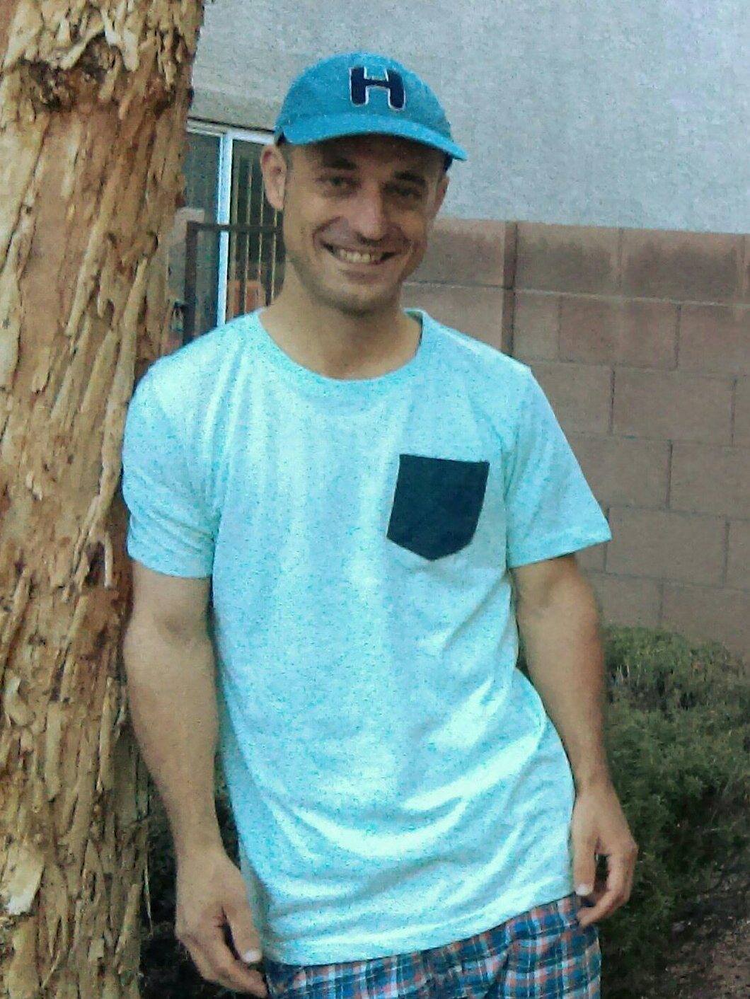

Matthew Love

Summary:
With 9 years experience as a Camera Operator for companies such as BYUtv, CW, Mountain View Pictures, NBC Sports Network, Univision Sports, Pac-12, etc. for Sports, News, Comedy and other various types of shows and with 5 years experience as a Computer Technician for a University, Fortune 500 company and an Elementary School, I have valuable skills that cover more than one career field. This makes me a valuable asset to companies wanting to have their developer or support technician take on photography, video and web developer roles, etc. Thank you for considering me and I hope to start working with your team on your upcoming projects.
Education:
Brigham Young University
1/2008 to 12/2014
Bachelor of Arts
Brigham Young University-Idaho
1/2005 to 7/2007
Associate of Science
Work Experience:
Site Based Technician
Clark County School District
10/2021 to Current
- Creating a Website for the school using HTML, CSS and Javascript saving the school $3000
- Photographed and Filmed for special events such as Graduations, Music Programs and Award Ceremonies
- Networked the schools printers
- Troubleshot and fixed issues with Desktops, Printers, Interactive Flat Panels, Chromebooks, etc.
IT Operations Specialist
Intuit
08/2018 to 07/2020
- Led two employees on the server infrastucture tear down process when Intuit went to the AWS Cloud.
- Maintained Servers by swapping faulty DIMM cards, hard drives, etc.
- Communicated with Hardware Engineers in the US and India to carry out instructions provided at our site and created tickets to pass on those instuctions for our third party client sight
- Escorted third party vendor technicians to replace faulty hardware
Freelance Camera Operator
Mountain Pictures, Raycom Productions, BYUtv, NBC Sports Network, Univision Sports, Pac-12, etc.
3/2013 to 8/2016
- Created Visually Appealing Graphic Backgrounds for Sports Broadcast
- Filmed MLS Soccer, University Sports, College Rugby Tournament, College Football and Basketball, etc.
Camera Operator
BYUtv
4/2008 to 12/2014
- Initiated a training program for newer employees to gain needed audio visual skills
- Collaborated with 3 other highly skilled individuals creating storyboards for videos which created needed work hours for new employees
- Filmed University Sports for 6 years
- Developed from Novice to Professional specializing in hand held camera operation
Skills:
- HTML, CSS and Javascript
- Computer Support
- Basic understanding of Active Directory, Batch Scripts, Linux
- Data Center Server Maintenance
- Adobe Premiere, Camera, etc.
Awards, Certificates or Other Acheivements:
- AWS Solutions Architect Associate Certification (10/2013 to 10/2016)
- CCSD Rave Review Award Recipient Frias Elementary (3/2024)
Hobbies
Contact Me